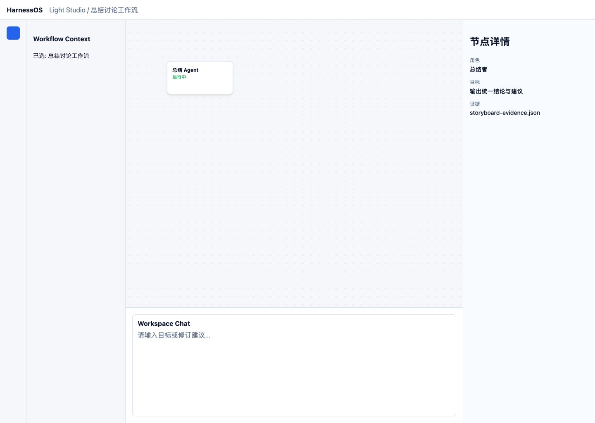
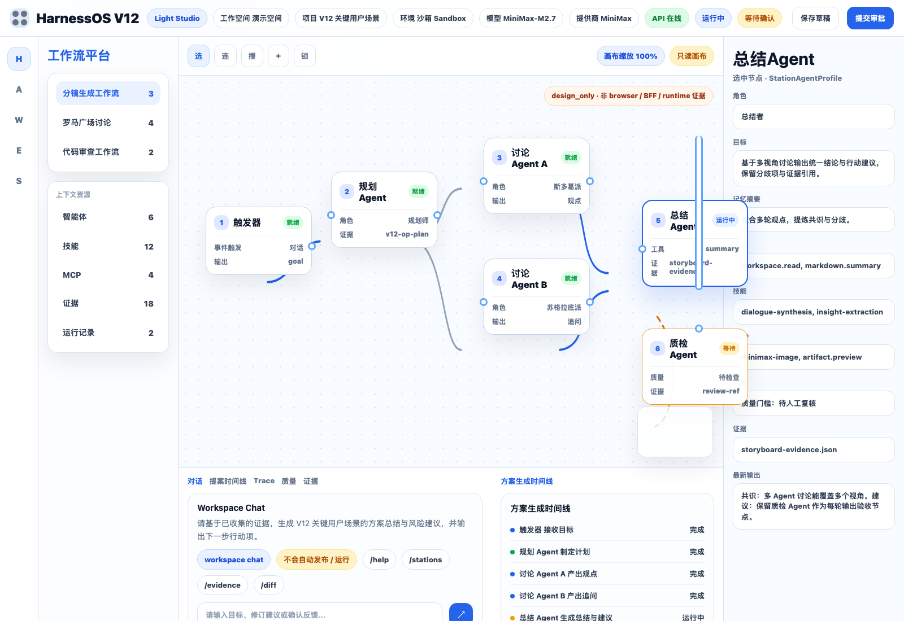
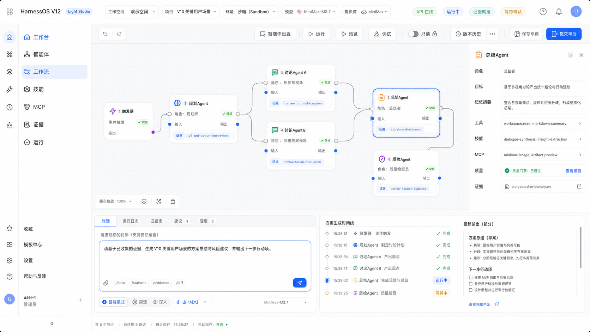
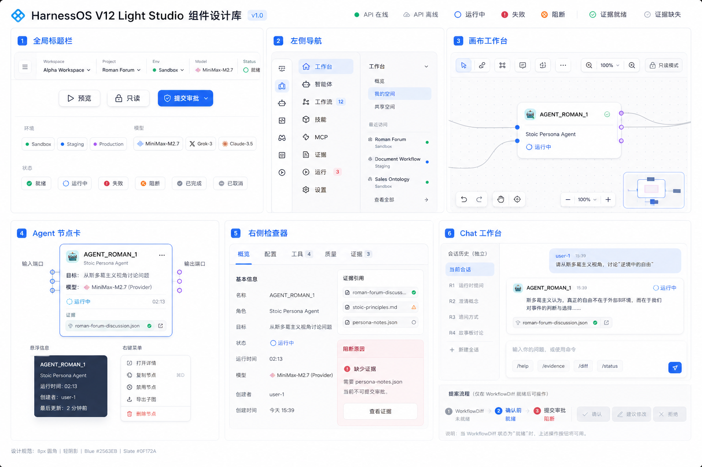

Gemini 原始输入
external design input

作为外部设计输入原样落盘，保留其信息架构、组件边界和最小产品形态。
V12-0P 高保真原型冻结 · 对齐 imag2 整体体验概念图
design_only · 非 browser / BFF / runtime 证据
本页把 V12-0A 组件草图、imag2 概念图和 V12-0P 交互规格合并成一个可审查的高保真原型。 它用于冻结产品体验方向：用户如何进入工作台、理解画布、查看 Agent / Station、审计证据、以及通过自然语言生成提案。
这次 V12-0P 审查新增记录了一个外部原型输入。左侧保留 Gemini 生成的最小 Light Studio 原型；右侧是基于当前冻结决策派生出的 HarnessOS 原型代码。两者都属于 design_only 设计证据，不计入真实 browser / BFF / runtime 实现。


这个屏幕展示 V12 结束后用户应能理解的产品结构：左侧是产品域和对象目录，中间是只读画布，右侧是节点详情，下方是 Chat / 提案 / Trace / 质量 / 证据工作台。
上一版仍偏整体展示，组件细节不足。v4 单独展开导航、画布、节点卡、Inspector、底部工作台、状态枚举和用户路径。
工作流平台作为一级路由；候选节点和模板收纳到二级上下文；节点补多输入多输出端口；连线改为完整曲线；Inspector 与底部工作台分层更清楚。
api_online顶部显示绿色 API 在线，用户可继续浏览工作台和读取 BFF DTO。
api_offline顶部转为红色离线，L2 显示缓存只读，Chat 输入显示不可提交原因。
node_hover节点抬升、端口发光、相邻连线高亮，并展示角色和证据数量提示。
node_selected节点出现蓝色描边，右侧 Inspector 打开并绑定同一节点 DTO。
invalid_edge连线变红并回弹，出现策略/能力拒绝原因，不发生任何持久变更。
awaiting_confirmation底部提案时间线停在确认节点，发布/运行按钮保持禁用或 proposal-only。
evidence_missing证据入口为 amber，Inspector 展示缺失字段和下一步补证据动作。
blocked节点或边显示警告徽标，底部 Trace 展示阻断事件和可审计 ref。
用户从 L1 工作台进入项目，在 L2 看到工作流、Agent 和证据对象。
用户在底部 Chat 输入自然语言目标，系统生成提案时间线。
画布展示 trigger、station Agent、tool/MCP、quality/evidence 节点关系。
点击节点打开 Inspector，检查 role、goal、tools、MCP、policy 和证据。
用户在提案时间线中确认、修订或拒绝 WorkflowDiff，不静默发布/运行。


一二级导航、画布连线、节点详情、多输入/输出、底部工作台、状态枚举和用户路径。
真实浏览器实现、BFF-only 网络证据、DTO 数据一致性、真实交互截图和自动化 UX 测试。
人工接受 V12-0P 后进入 implementation-readiness audit，再讨论真实 V12 browser implementation。